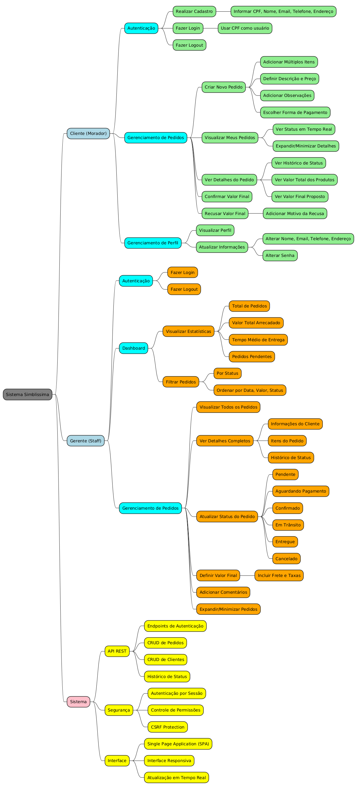

Mapas Mentais
Introdução
Mapa mental consiste em criar resumos cheios de símbolos, cores, setas e frases de efeito com o objetivo de organizar o conteúdo e facilitar associações entre as informações destacadas. Este documento apresenta o mapa mental do sistema Simblissima, que visa facilitar a logística de entregas de produtos do continente para a Ilha Primeira, organizando visualmente os principais atores, funcionalidades e componentes do sistema.
Metodologia
O mapa mental foi desenvolvido utilizando PlantUML com sintaxe de mindmap, organizando hierarquicamente as funcionalidades e responsabilidades do sistema Simblissima. A estrutura foi criada com base nos requisitos elicitados através das técnicas de brainstorming, entrevistas e análise do documento de visão, representando as três principais entidades do sistema: Cliente (Morador), Gerente (Staff) e Sistema.
Mapa Mental - Sistema Simblissima
Versão 1.0

Você também pode visualizar o mapa mental interativamente aqui: Visualizar no PlantUML Web
Estrutura do Mapa Mental
O mapa mental do sistema Simblissima foi organizado em três principais ramificações, cada uma representando os diferentes atores e componentes do sistema:
1. Cliente (Morador da Ilha Primeira) - Autenticação: Funcionalidades de cadastro, login e logout - Realizar cadastro com CPF, nome, email, telefone e endereço - Login utilizando CPF como nome de usuário - Sistema de logout seguro
- Gerenciamento de Pedidos: Funcionalidades principais do cliente
- Criar novos pedidos com múltiplos itens
- Definir descrição e preço para cada item
- Adicionar observações e escolher forma de pagamento
- Visualizar pedidos com status em tempo real
- Ver detalhes completos incluindo histórico de status
-
Confirmar ou recusar valores finais propostos
-
Gerenciamento de Perfil: Manutenção de dados pessoais
- Visualizar informações do perfil
- Atualizar dados pessoais (nome, email, telefone, endereço)
- Alterar senha de acesso
2. Gerente (Staff/Administrador) - Autenticação: Sistema de login administrativo - Login e logout com permissões especiais
- Dashboard: Painel de controle gerencial
- Visualizar estatísticas (total de pedidos, valor arrecadado, tempo médio)
- Filtrar pedidos por status e ordenar por diferentes critérios
-
Monitorar pedidos pendentes
-
Gerenciamento de Pedidos: Controle completo dos pedidos
- Visualizar todos os pedidos do sistema
- Acessar detalhes completos (cliente, itens, histórico)
- Atualizar status (Pendente, Aguardando Pagamento, Confirmado, Em Trânsito, Entregue, Cancelado)
- Definir valores finais incluindo frete e taxas
- Adicionar comentários ao histórico
3. Sistema (Componentes Técnicos) - API REST: Interface de comunicação - Endpoints de autenticação - CRUD completo para pedidos e clientes - Gerenciamento de histórico de status
- Segurança: Proteções e controles
- Autenticação por sessão
- Controle de permissões baseado em roles
-
Proteção CSRF contra ataques
-
Interface: Camada de apresentação
- Single Page Application (SPA)
- Interface responsiva para diferentes dispositivos
- Atualização de dados em tempo real
Arquivo PlantUML
O mapa mental foi implementado em PlantUML e pode ser encontrado no arquivo mm.wsd na pasta de iniciação. Para visualizar o mapa mental, utilize um renderizador PlantUML ou ferramentas compatíveis.
Conclusão
O mapa mental do sistema Simblissima oferece uma visão estruturada e hierárquica de todas as funcionalidades e componentes do sistema de gerenciamento de pedidos para a Ilha Primeira. A organização visual facilita a compreensão das responsabilidades de cada ator (Cliente e Gerente) e dos componentes técnicos do sistema. A estrutura do mapa mental reflete fielmente os requisitos funcionais elicitados durante as fases de iniciação do projeto, servindo como uma ferramenta de referência rápida para desenvolvedores, stakeholders e usuários finais. A utilização de cores diferenciadas para cada categoria (azul para usuários, amarelo para sistema, verde e laranja para funcionalidades) auxilia na identificação visual dos diferentes aspectos do sistema. Este mapa mental demonstra a completude funcional do sistema Simblissima, abrangendo desde funcionalidades básicas de autenticação até recursos avançados de gerenciamento de pedidos e dashboard administrativo.
Referências
PlantUML Mind Map. Disponível em: https://plantuml.com/mindmap-diagram. Acesso em: 04 jun. 2025.
BUZAN, Tony. Mapas Mentais e sua Elaboração: um sistema definitivo de pensamento que transformará a sua vida. São Paulo: Cultrix, 2005.
Mind Mapping: Scientific Research and Studies. Disponível em: https://www.mindmeister.com/blog/mind-map-uses/. Acesso em: 04 jun. 2025.
Versionamento
| Data | Versão | Descrição | Autor(es) |
|---|---|---|---|
| 24/03/2025 | 1.0 | Criação do documento e mapa mental inicial | Bernardo Lobo, Bernardo Moreira, Guilherme Dias, Julia Curto e Michel de Melo |
| 04/06/2025 | 2.0 | Atualização completa para refletir o mapa mental implementado em PlantUML (mm.wsd) do projeto Simblissima | Bernardo Lobo, Bernardo Moreira, Guilherme Dias, Julia Curto e Michel de Melo |